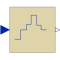
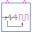

ZeroOrderHoldZero order hold of a sampled-data system |

|
Information
This information is part of the Modelica Standard Library maintained by the Modelica Association.
The output is identical to the sampled input signal at sample time instants and holds the output at the value of the last sample instant during the sample points.
Parameters (2)
Outputs (3)
| sampleTrigger |
Type: Boolean Description: True, if sample time instant |
|---|---|
| firstTrigger |
Type: Boolean Description: Rising edge signals first sample instant |
| ySample |
Type: Real |
Connectors (2)
| u |
Type: RealInput Description: Connector of Real input signal |
|
|---|---|---|
| y |
Type: RealOutput Description: Connector of Real output signal |
Used in Components (1)
|  |
Modelica.Electrical.PowerConverters.DCDC.Control
Generates a pulse width modulated (PWM) boolean fire signal |